Fall 2025 · Seasonal Focus
Fresh storytelling and exciting sweaters
Q3/Q4 direction centered on clear visual merchandising stories, Quick React opportunities, dimensional
cables, lofty soft hand-feel, and refreshed yarn, stitch, and technique across core, key items and
elevated fashion.
- Fresh storytelling
- Customer-favorite evolution
- Vendor Co-create yarn and stitch innovation
Fall 2025 · Big Ideas
Dimensional fall knit ideas
Cables
Lofty and soft
Match sets
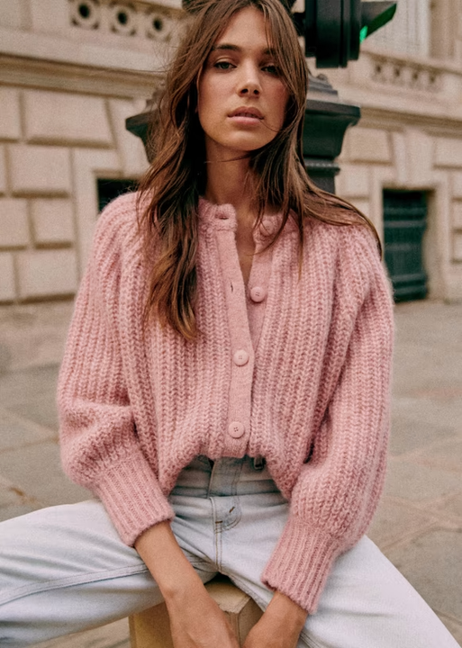
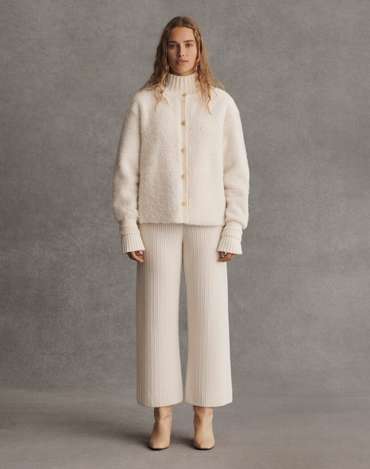
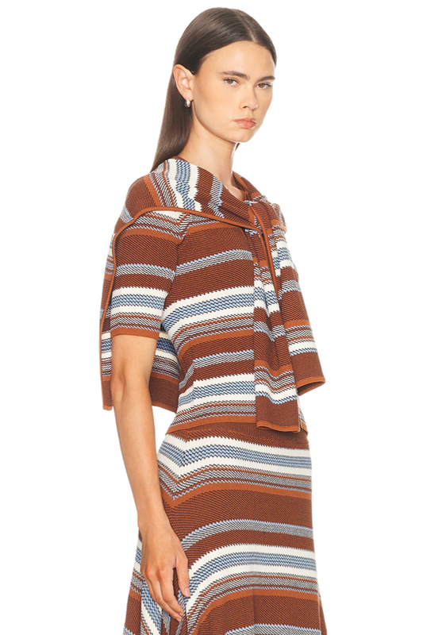
View August board
Holiday 2025 · Big Ideas
High pile · Sparkle · Bold graphics
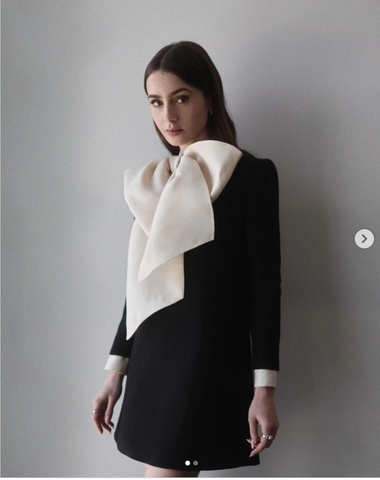
Trans 2026 · Big Ideas
Match set · Easy cardi · V-Day
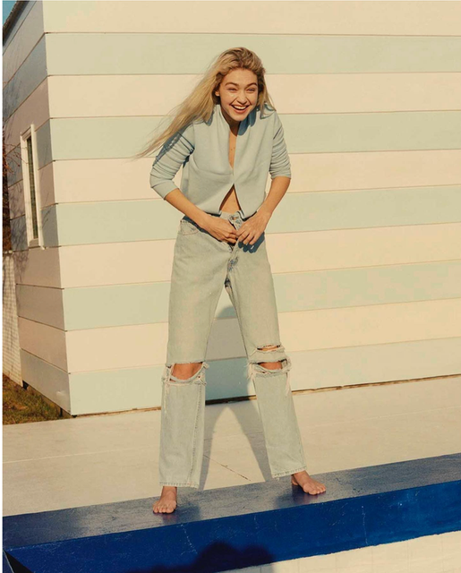

Product Development Archive
These sit behind the hero projects as a deeper read on fit approval, yarn composition, stitch engineering,
trims, and commercial signals.
Printed Saddle Sleeve Tee
Top-volume-driver program with printed jersey, 12GG body, rib trims, fit approval, and recycled blend.
Contrast-Trim Saddle Tee
Best-seller execution with full needle collar, clean contrast trims, and light soft body yarn.
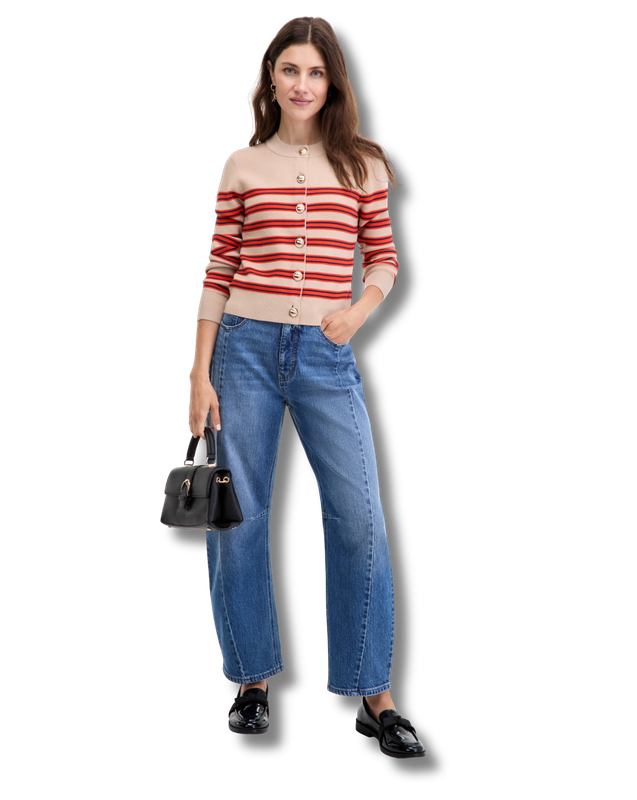
Mix + Match Sweater Set
Birdseye jacquard, tubular trims, doubled rib waist construction, and shank-button details.
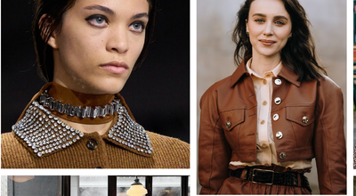
Crew Neck Table Program
5GG jersey and rib side panel execution with 85% STU YTD.

Stripe Polo Sweater
7GG jersey, faux horn button, dream yarn, and 95% STU YTD signal for a polished key item.

Varsity Tipped V-Neck
Half-cardigan structure and recycled cotton blend translated into a sporty heritage layer.
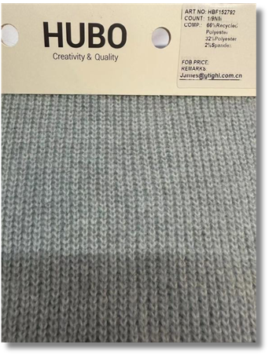
Sweater Bomber & Trouser Set
Matching-set jersey program with dream yarn, fit approval, and 90% STU YTD performance note.
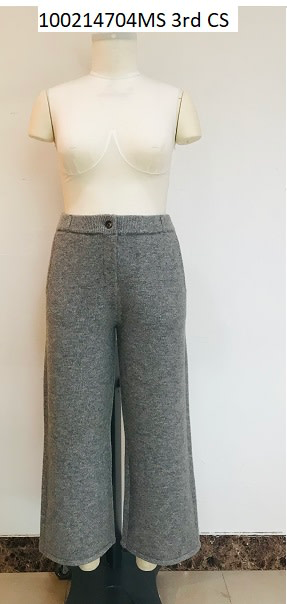
Mix Cable Cardigan
Seed stitch, reverse jersey, cable work, faux horn button, and five-week best-seller callout.
Lurex Dot Cardigan
Holiday table ladderback jacquard with metallic yarns and top-volume-driver context.
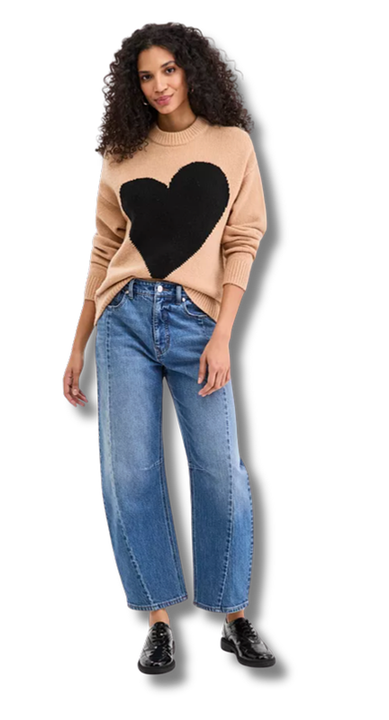
Exploded Heart Sweater
Trans-seasonal intarsia motif with recycled yarn blend and volume-driver signal.

Rib Cardigan + Pencil Skirt
2x2 rib matching set with faux horn button, fit approval, and four-week best-seller context.

Collared Sweater Jacket
Tuck stitch, tubular collar and pocket finishing, self-covered buttons, and flat-back rib trims.